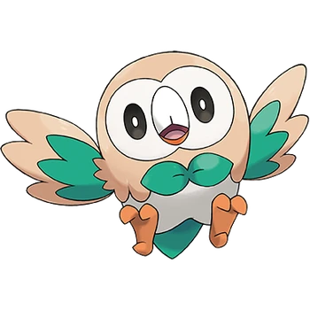
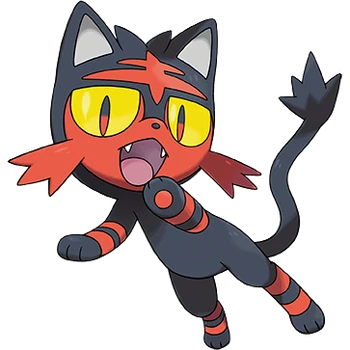
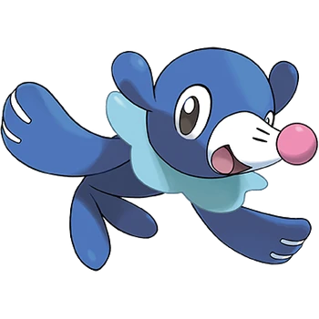
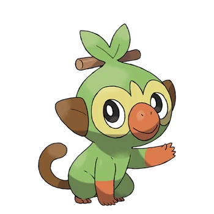
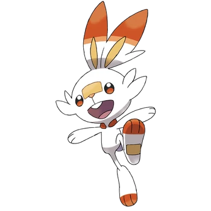
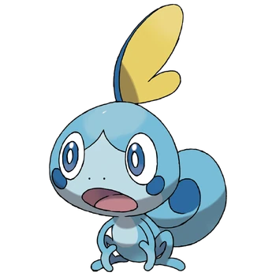

Septima generación
- Rowlet

- Rowlet está basado en una cría de lechuza.
Este Pokémon surca los cielos con sigilo, acercándose a sus adversarios sin hacer el menor ruido y sin
que lo detecten para asestarles luego potentes patadas. También puede atacar a distancia gracias a las
hojas de sus alas, afiladas como cuchillas, este movimiento conocido como Follaje es su principal ataque.
Rowlet puede girar el cuello casi 180° para inspeccionar sus alrededores, con lo que es capaz de ver lo
que tiene justo a su espalda. En los combates, suele girar la cabeza para mirar a su entrenador
directamente a la espera de instrucciones.
- Litten

- Litten está basado en un gato. Su pelaje es muy graso y altamente inflamable. Litten se lame para acicalarse
y luego prende las bolas de pelo que se forman en su estómago para atacar a sus adversarios con bolas de
fuego.
Cuando a Litten le llega la hora de cambiar su pelaje, le prende fuego y se produce un estallido de llamas
monumental. Eriza el pelo de su lomo para intimidar a sus enemigos. Litten es un Pokémon lógico y
apasionado.
Este Pokémon no pierde nunca la calma y jamás muestra sus emociones.
- Popplio

- Popplio está basado en un león marino. Es capaz de crear globos de agua por la nariz y utilizarlos como
parte
de sus distintas estrategias y ataques en los combates. Este Pokémon se mueve con más soltura en el agua que
en tierra firme y puede nadar a velocidades que superan los 40 km/h. Cuando está fuera del agua, aprovecha
la elasticidad de sus globos para ejecutar saltos y otras acrobacias.
Octava generación
- Grookey

- Grookey es un mono verde con orejas y cola marrón, manos y hocico de color naranja, y una hoja con una
ramita en
su cabeza. La baqueta que lleva Grookey no era más que una ramita recogida del bosque en el que habita su
manada,
pero, tras estar expuesta a la energía que emana de su cuerpo, adquirió poderes especiales. El pelaje verde
de
Grookey sintetiza energía a partir de la luz solar. Las flores y hojas marchitas recuperan su color cuando
Grookey golpea con su baqueta cerca de ellas.
- Scorbunny

- Scorbunny es un conejo blanco con un naranja rojizo tanto en las orejas como en los pies y una tirita
naranja
en su cara justo entre los ojos.
Scorbunny se vale de sus poderosas patas para correr y saltar alrededor de sus adversarios, lo que los
confunde
y desorienta. Las plantas de las patas alcanzan altas temperaturas, y con ellas puede quemar a sus rivales
cuando los patea. Tiene una saca de fuego en el pecho que contiene energía ígnea. Si calienta adecuadamente
y consigue elevar su temperatura corporal y acelerar su pulso, despertará el verdadero poder de su energía
ígnea y mejorarán considerablemente sus capacidades físicas.
- Sobble

- Se trata de un Pokémon de especie acuartija. Está basado en un camaleón. Es algo tímido y ataca a distancia
mientras está escondido en el agua. Al tocar el agua, las marcas y el color del cuerpo de Sobble cambian, lo
que le permite mimetizarse con el entorno. Como es un poco tímido, en cuanto se siente avergonzado o se
pone nervioso, segrega agua como si de sudor se tratase para camuflarse. Además, sus lágrimas son capaces
de provocar el llanto en aquellos que están a su alrededor, ¡pues se dice que su efecto es equivalente
al de 100 cebollas! Si percibe peligro, se pondrá a llorar y a esparcir sus lágrimas para provocar un
llanto incontrolable en todo aquel que se acerque y aprovechará esa distracción para huir.